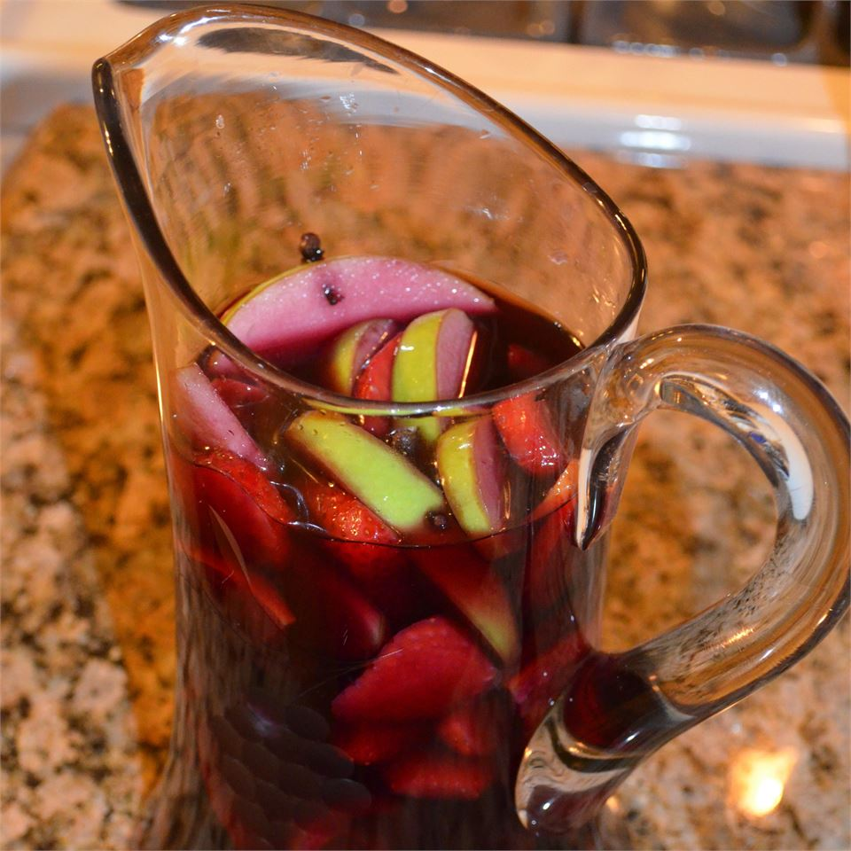

Lasagña
Home

Amanda's World Famous Sangria
This is a wonderfully flavorful summertime (or anytime) beverage.
Most any fruit you would like to use (except bananas) will probably work with this recipe.
You can even use frozen fruit like peaches and berries (but thaw them, first).
Try this recipe, you will not regret it.
Ingredients
- 1 bottle of red wine
- 1/2 cup of rum
- 1 lemon, sliced
- 1 orange, slice
- 1 lime, sliced
- 1 pint of strawberries, hulled and sliced
- 1 apple, sliced
- 9 whole cloves
- 1 liter lemon-lime flavored carbonated beverage
Steps
- In a large jar or pitcher combine wine and rum with sliced lemon, orange, lime, and strawberry. Push cloves into apples slices and add to mixture. Cover and refrigerate for at least 4 hours or overnight (the longer the better).
- To serve, pour a tall glass half-full of wine mixture. Fill the rest of the glass with soda and stir gently. Remove cloves from apple slices and garnish drinks by spooning some marinated fruit into glass.